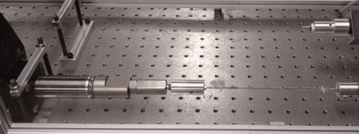

Ryan Snodgrass
PhD Candidate
|

|
NSF Graduate Research Fellow |
|
rjs492@cornell.edu |
|
Site pages
Hi! I am a mechanical engineer at Cornell University.
I will graduate with a PhD in 2019. I’m looking for interesting new projects to pursue - please contact me with opportunities at rjs492@cornell.edu. I hope the following information gives you a better idea of how I am qualified for a variety of engineering projects.
I love building things!
Doctoral research projects:
At Cornell, I was fortunate enough to be awarded a NSF Graduate Research Fellowship, which gave me the flexibility to research a variety of interesting topics. Generally, my research has focused on thermal systems. Click on the images below for more information on each of my recent projects.
Elastocaloric refrigeration

Portable solar thermal system (TINY)
Heat-driven shape memory actuators
Places I've worked:
I have a variety of professional experiences, both in industry and at universities. I am a talented engineer and an adept research scientist.
I worked with robotics at both Honda and Dow AgroSciences. It’s hard for me to showcase my work from this topic because of IP limitations; however, I’d be happy to discuss the topic. I have experience with Motoman and EPSON 6-axis and 3-axis robots, vision algorithms for control, and process control for manufacturing.
- Honda Engineering North America
- Dow AgroSciences
- Cornell University
- IMTEK, University of Freiburg, Baden-Württemberg, Germany
- Ohio State University
Engineering skillset:
Below I’ve tried to summarize my technical skills. Please click on the images for more information on each subject, or have a look at my Résumé  .
.
|
Mechanical design |
Manufacturing
|
Programming
|
Electronics
|
Thermal systems
|
Mechanical simulation |
Thermal simulation
|
Sensors
|
Robotic systems
|
Optics
|
Publishing my work
|
Deploying my work
|
Professional interests (incomplete list):
- Energy
- Refrigeration (especially solid state)
- Automation
- Actuators (especially shape memory)
- Portable devices
- Design and manufacturing (both mechanical/electrical)
- Sensors/measurement
- Mechanisms
- Any engineering topic that is cutting-edge, unusual, innovative
Hobbies:
I am a very self-motivated individual (it’s easy to be motivated when having fun), and my work is important to me. However, I also have a variety of hobbies, and I value a balanced lifestyle.
- Camping
- Hiking
- Basketball
- Running
- Rock climbing
- Improv comedy


{kind=link}
{kind=link}
{kind=link}
{kind=link}